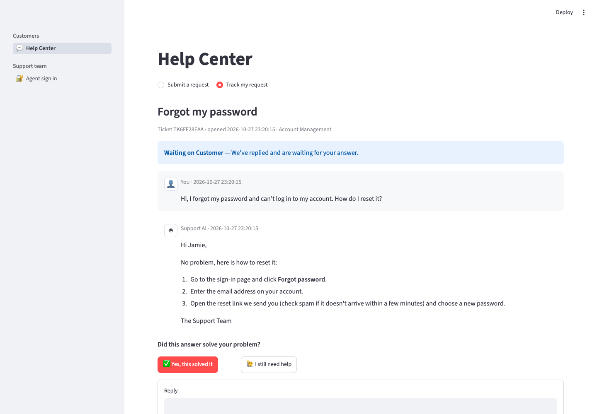
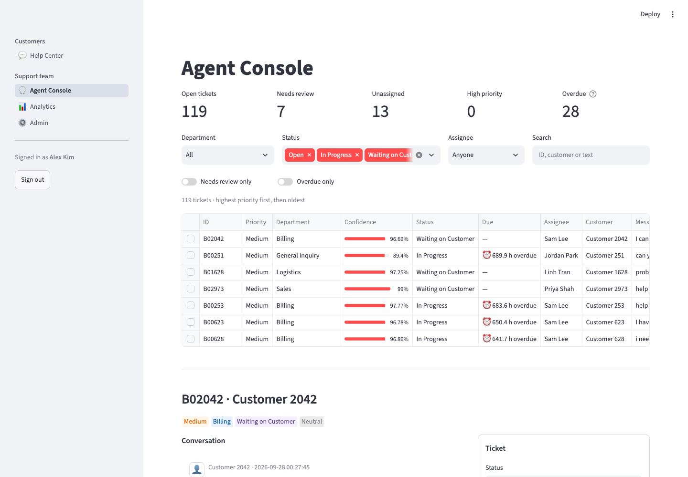
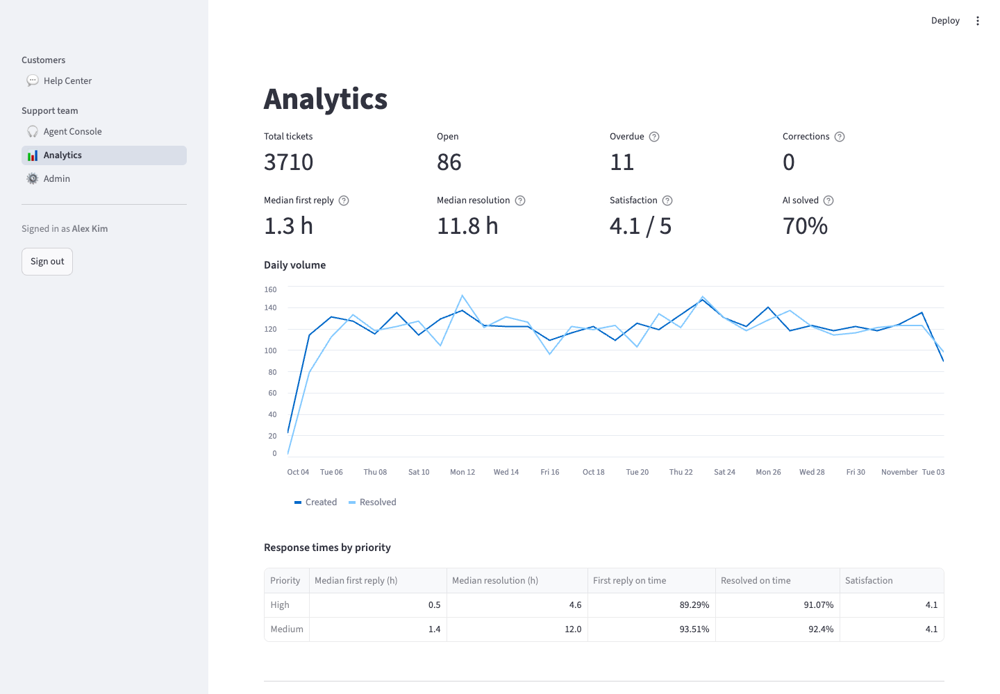

Customers file requests in a Help Center. A machine-learning model sends each one to the right department, an AI Solver answers the routine questions (and the customer confirms it worked), and agents handle the rest in a console with response-time targets, AI-drafted replies and analytics.
In the demo, sign in as any agent to see the support-team side. The first visit may take a minute while the app wakes up.
From the demo's 30-day simulated history of ~3,700 tickets.
Two sides of the same system: what customers see, and what the support team works in.



Every step is logged on the ticket, and human corrections feed back into the model.
The customer writes in the Help Center and gets a ticket number to track it.
TF-IDF + a calibrated SVM picks the department with a confidence score; policy keywords set priority.
Confident, calm, non-urgent tickets get an AI answer grounded in similar past replies, or are handed over.
Agents take the rest: assign, reply (with AI drafts), and confirm or correct the routing.
Corrections retrain the model and immediately steer look-alike tickets via vector search.
Built end to end: data, model, retrieval, LLM, product UI, operations and tests.
Calibrated LinearSVC on TF-IDF 1–2-grams, English and Vietnamese, with a review flag for low-confidence tickets.
Retrieval-augmented answers from ChromaDB; escalates when the past replies don't cover the question.
Agent corrections retrain versioned models and re-route similar tickets before any retrain.
First-reply and resolution targets by priority, with due times and overdue warnings.
Ticket tracking, replies that reopen tickets, “did this solve it?” and 1–5 star ratings.
Agent sign-in, database-backed abuse limits, a full activity log, CI on every push.
Python throughout, with an OpenAI-compatible LLM (Gemini in the demo).